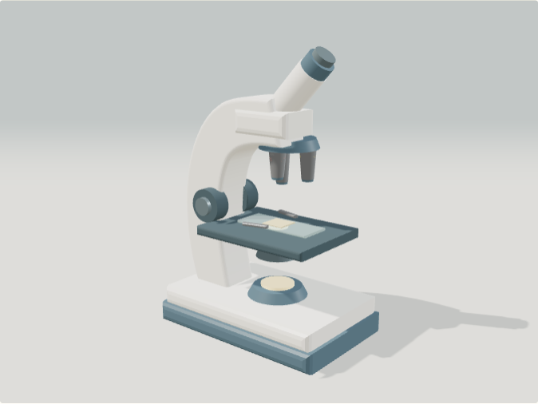
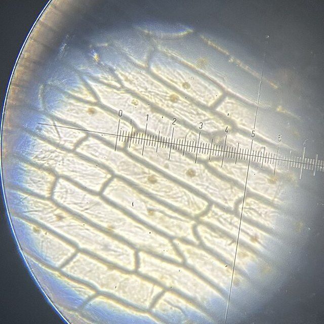

Microscope
Record your prediction in your book. Then compare views of the same slide.

- Eyepiece
- Objective lenses
- Slide on stage
- Light source
Compare the field of view

Choose an objective after you record your prediction.
The views use crops of one real photo to illustrate a change in field of view. They are illustrative and have no calibrated scale.Micrograph by Anonymous140209, cropped. Original photo · CC BY 4.0.